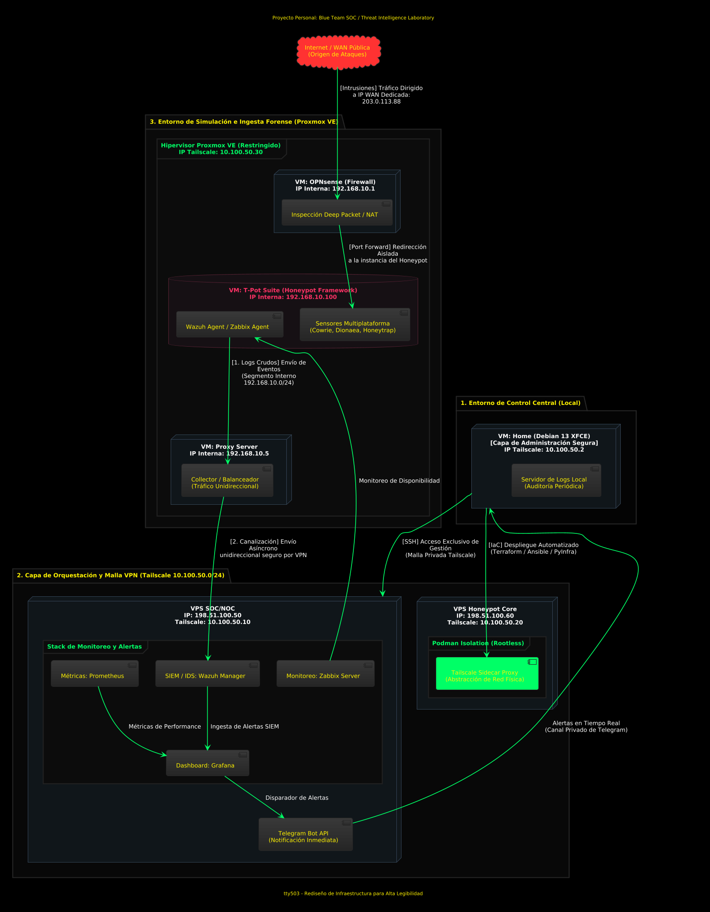
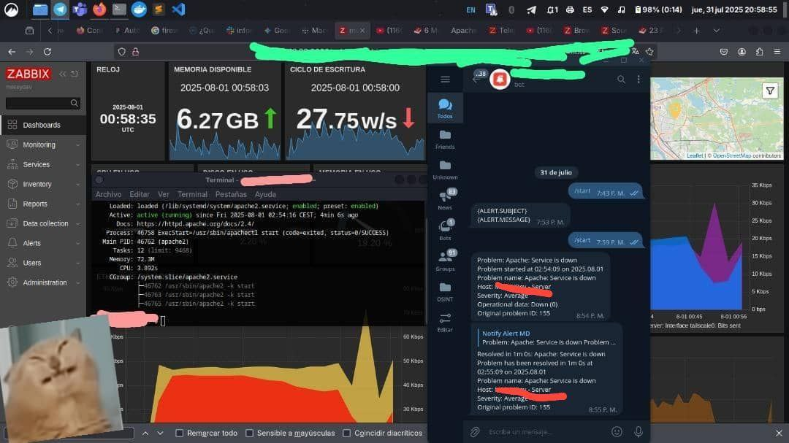

Un Laboratorio SOC que Muerde: Honeypots Activos, Aislamiento Total y Alertas en el Móvil
Esto no es un diagrama bonito de PowerPoint: es un entorno desplegado, encendido y escupiendo alertas a mi Telegram. En este artículo desmonto su arquitectura completa: virtualización con Proxmox y filtrado DPI con OPNsense, señuelos T-Pot expuestos a internet, una red mesh privada sobre Tailscale ejecutada en contenedores rootless, despliegue íntegro por código con Terraform y Ansible, y un stack de observabilidad con Wazuh, Zabbix, Prometheus y Grafana que cierra el ciclo.
/índice_del_analisis +
- Resumen Técnico
- Propósito y Filosofía del Laboratorio
- Infraestructura Base: Home, SOC/NOC y Honeypot Core
- Conectividad: Tailscale como Tejido Conector
- Diagrama de Arquitectura Lógica
- Stack de Monitoreo y Alertas en Tiempo Real
- Anillos de Logs: Defensa en Profundidad
- Despliegue Automatizado: IaC con Terraform, Ansible y PyInfra
- El Borrador: Arquitectura de Bloques Preliminar
- Lecciones Aprendidas y Próximos Pasos
- Referencias
00. Resumen Técnico
| Parámetro | Valor |
|---|---|
| Tipo de entorno | SOC personal / Blue Team con honeypots activos y Threat Intelligence |
| Virtualización | Proxmox VE (VM OPNsense + VM T-Pot + VM Proxy Server) |
| Nodos cloud | VPS "SOC/NOC" (monitoreo) y VPS "Honeypot Core" (señuelos) |
| Conectividad | Red mesh Tailscale 10.100.50.0/24, sidecar proxy en Podman rootless |
| Monitoreo | Wazuh (SIEM/IDS), Zabbix (disponibilidad), Prometheus (métricas), Grafana (dashboards) |
| Alertas | Telegram Bot API, en tiempo real desde Grafana |
| IaC | Terraform (provider Contabo), Ansible, PyInfra, Hashicorp Vault |
| Regla de oro | Flujo de logs unidireccional: Honeypot → SOC/NOC, jamás en sentido contrario |
01. Propósito y Filosofía del Laboratorio
Este laboratorio responde a una necesidad muy concreta: tener un entorno bajo control donde ensayar un Blue Team / SOC operativo, con ingestión de logs, detección de intrusiones, honeypots expuestos y capacidad de respuesta. Nada de papel: está corriendo, captura tráfico hostil real y sus alertas aterrizan en mi Telegram.
Tres principios gobiernan cada decisión de diseño:
- Aislamiento estricto: ningún servicio administrativo se asoma a internet; el acceso viaja siempre por la VPN privada sobre Tailscale.
- Infraestructura como Código (IaC): cada componente queda definido en Terraform y configurado con Ansible — reproducibilidad total y documentación que nunca caduca.
- Defensa en profundidad: anillos concéntricos de logs, contenedores sin privilegios, firewalls con inspección profunda y segmentación de red para acorralar cualquier compromiso.
02. Infraestructura Base: Home, SOC/NOC y Honeypot Core
VM Local "Home" — el Centro de Control
El proyecto arranca en una máquina virtual local con Debian 13 XFCE apodada "Home". Desde ella administro todo el laboratorio, pero con una regla innegociable: ningún puerto de administración mira a internet. Las VPS solo se tocan a través de la red privada de Tailscale.
| Recurso | Especificación |
|---|---|
| CPU | 4 Núcleos |
| RAM | 4 GB |
| Disco | 60 GB |
| Sistema Operativo | Debian 13 XFCE |
| IP Tailscale | 10.100.50.2 |
| Rol | Centro de control, despliegue IaC y revisión de logs |
VPS "SOC/NOC" — el Cerebro que Vigila
La primera VPS concentra todo el músculo analítico: Wazuh Manager para SIEM/IDS, Zabbix Server para disponibilidad, Prometheus para métricas y Grafana como panel unificado. Desde aquí salen las alertas hacia la API de Telegram Bot.
VPS "Honeypot Core" — los Señuelos
La segunda VPS hospeda el framework T-Pot con sensores multiplataforma (Cowrie, Dionaea, Honeytrap) y ofrece servicios trampa directamente a internet. Todo el tráfico malicioso capturado viaja de manera unidireccional hacia el SOC/NOC para su análisis.
| VPS | IP Pública | IP Tailscale | CPU | RAM | Disco |
|---|---|---|---|---|---|
| SOC/NOC | 198.51.100.50 | 10.100.50.10 | 3 Núcleos | 8 GB | 150 GB SSD |
| Honeypot Core | 198.51.100.60 | 10.100.50.20 | 3 Núcleos | 8 GB | 150 GB SSD |
Entre ambas VPS el tráfico solo fluye en un sentido: del Honeypot hacia el SOC/NOC llevando logs. En dirección contraria no existe camino alguno. Si el Honeypot cae en manos de un atacante, este no podrá pivotar hacia el SOC/NOC ni tocar los históricos.
03. Conectividad: Tailscale como Tejido Conector
Tailscale es la costilla que sostiene toda la estructura: una red privada tipo mesh definida sobre el segmento 10.100.50.0/24, donde cada nodo conserva una IP fija.
Tailscale Sidecar Proxy con Podman Rootless
Un detalle crítico es dónde vive Tailscale dentro de las VPS: no lo instalo sobre el sistema operativo, sino dentro de un contenedor Podman en modo rootless actuando como sidecar proxy. Las ventajas son triples:
- Abstracción de red: el contenedor tapa las IPs reales de los servidores, incluso ante mis propios ojos: quien entra por Tailscale jamás ve la IP física de la VPS.
- Aislamiento de privilegios: Podman corre bajo un usuario sin poderes, lejos de la interfaz de red real del host.
- Redirección interna: el sidecar opera desde la red privada del servidor y deriva el tráfico hacia cada servicio sin exponer interfaces físicas.
Los perfiles administrativos con menos privilegios se conectan a esa instancia de Tailscale embotellada en Podman, y ella les abre únicamente los servicios que necesitan. Ven un espacio confinado dentro de una red privada, sin atisbo del sistema operativo subyacente.
04. Diagrama de Arquitectura Lógica
Este es el plano maestro del laboratorio: flujo completo de datos, direccionamiento IP e interconexión de todos los piezas. Es fruto de varias iteraciones y refleja fielmente el despliegue vigente.

Desglose del Diagrama
1. Entorno de Simulación e Ingesta Forense (Proxmox VE):
- Hipervisor Protegido: Proxmox VE bajo la IP 10.100.50.30 de la red Tailscale.
- VM OPNsense (Firewall): IP interna 192.168.10.1. Recibe internet por la WAN dedicada 203.0.113.88, aplica inspección profunda de paquetes (DPI), NAT y Port Forward aislado hacia los señuelos.
- VM T-Pot Suite: IP interna 192.168.10.100. Ejecuta sensores multiplataforma (Cowrie, Dionaea, Honeytrap) junto a los agentes de Wazuh y Zabbix; los logs crudos parten hacia el Proxy Server.
- VM Proxy Server: IP interna 192.168.10.5. Hace de colector y balanceador unidireccional, extrayendo los datos fuera del entorno simulado rumbo al SOC/NOC.
2. Capa de Orquestación y Red Mesh VPN (Tailscale 10.100.50.0/24):
- VPS SOC/NOC: ingiere logs de forma asíncrona y unidireccional. Aloja Prometheus (métricas), Wazuh Manager (SIEM/IDS), Zabbix Server (disponibilidad) y Grafana (dashboard unificado). Las alertas disparan hacia la API de Telegram Bot.
- VPS Honeypot Core: permanece confinada mediante contenedores Podman rootless y abstrae su red física con el Tailscale Sidecar Proxy.
3. Entorno de Control Central (Local):
- VM Home: el centro de operaciones local. Gobierna la infraestructura con IaC —Terraform, Ansible y PyInfra—, accede por SSH exclusivamente vía la red privada y mantiene un servidor de logs local para auditorías periódicas.
05. Stack de Monitoreo y Alertas en Tiempo Real
El corazón del laboratorio late en la VPS SOC/NOC. La cuaterna Wazuh + Zabbix + Prometheus + Grafana me da visibilidad de punta a punta: desde la detección de intrusiones hasta el pulso de rendimiento de cada servicio.
| Herramienta | Rol | Datos que Procesa |
|---|---|---|
| Wazuh Manager | SIEM / IDS | Eventos de seguridad, integridad de archivos, detección de anomalías |
| Zabbix Server | Monitoreo de Disponibilidad | Estado de servicios, consumo de recursos, uptime |
| Prometheus | Métricas de Rendimiento | CPU, memoria, disco, tráfico de red, contenedores |
| Grafana | Dashboard Unificado | Visualización de datos de Wazuh, Zabbix y Prometheus |
| Telegram Bot API | Alertas en Tiempo Real | Notificaciones de incidentes disparadas desde Grafana |
Validación en Vivo: Apache Caído y Recuperado
Esta captura documenta el laboratorio en plena faena, durante un incidente real donde Apache se cayó y quedó restablecido automáticamente en 1 minuto:

Tres paneles cuentan la historia simultáneamente:
- Zabbix (izquierda): memoria disponible (6.27 GB), escritura en disco (27.75 w/s) y gráfico de rendimiento red/disco.
- Terminal (centro): systemctl status apache2 confirmando el servicio activo tras recuperarse.
- Telegram (derecha): alerta con asunto {ALERT.SUBJECT}, problema "Apache: Service is down" iniciado a las 02:54:09 y resuelto en 1 minuto.
06. Anillos de Logs: Defensa en Profundidad
La estrategia de logging se organiza en anillos concéntricos, desde lo más externo (cada contenedor individual) hasta lo más interno (la VPS entera). Si un anillo cae o es manipulado, los demás siguen escribiendo.
Honeypot Core — 4 Anillos
- Contenedores de servicios (Podman): logs de cada sensor del T-Pot y del contenedor Tailscale sidecar.
- Instancias de Proxmox: logs de las VMs que viven dentro del hipervisor.
- Contenedor de Tailscale: logs del proxy sidecar y del tráfico de red.
- VPS completa: logs del sistema operativo, accesos SSH y eventos de seguridad.
SOC/NOC — 2 Anillos
- Contenedores de Tailscale y SOC/NOC: logs del proxy y de los servicios de monitoreo.
- VPS completa: logs del sistema operativo y eventos de seguridad.
Home — 1 Anillo (Auto-Hospedado)
- VM completa: servidor de logs local para revisión periódica, sin depender de servicios externos.
Oldsmar (2021) y el apagón de Ucrania (2015) dejaron una certeza incómoda: sin logs resulta imposible distinguir un error técnico de un ataque deliberado. Los anillos de este laboratorio existen precisamente para que esa distinción esté siempre al alcance. Cuando algo falla, sé qué anillo debió registrar el evento y puedo seguirle el rastro hasta el origen.
07. Despliegue Automatizado: IaC con Terraform, Ansible y PyInfra
La Infraestructura como Código es uno de los pilares del proyecto: todo componente está declarado en archivos versionables, capaces de reconstruir el entorno completo desde cero en minutos.
| Herramienta | Propósito | Cuándo se Usa |
|---|---|---|
| Terraform | Provisión de infraestructura | Crear servidores, redes y reglas de firewall. Usa el provider de Contabo para gestionar las VPS. |
| Ansible | Configuración y despliegue | Instalar y configurar software, ajustar permisos y aplicar AppArmor cuando el servidor está listo. |
| PyInfra | Alternativa a Ansible | Debugging en tiempo real durante la configuración. Compatible con scripts Python nativos. |
| Mitogen Library | Ejecución remota eficiente | Scripts de monitoreo que corren en el host remoto sin conexión SSH persistente. |
| Hashicorp Vault | Gestión de secretos | Protección de tokens, contraseñas y datos sensibles para aplicaciones autorizadas. |
La API de Contabo como Botón de Emergencia
Otro detalle relevante: gestiono la VPS Honeypot desde el SOC/NOC a través de la API de Contabo. Eso me permite:
- Tomar snapshots del estado antes de cualquier cambio.
- Reinstalar la VPS desde cero si detecto compromiso.
- Apagar el servidor ante una emergencia, todo desde scripts automatizados.
IPs Adicionales para Segmentar Servicios
Cada servicio expuesto a internet —como los señuelos— recibe una IP adicional propia, distinta de la IP administrativa de la VPS. Así el tráfico público queda separado por completo de la superficie de gestión.
08. El Borrador: Arquitectura de Bloques Preliminar
Antes del plano maestro existió esta versión preliminar —el "borrador" estructural— que fijó las relaciones directas entre componentes sin entrar en direccionamiento IP.

Ese croquis resultó decisivo para planificar los segmentos de Tailscale y la encapsulación de las máquinas virtuales dentro de Proxmox antes de saltar al diseño detallado.
09. Lecciones Aprendidas y Próximos Pasos
Lo que este laboratorio me ha enseñado
- Tailscale simplifica lo complejo: montar una red VPN segmentada con proxies sidecar habría sido un proyecto en sí mismo sin esta herramienta; su facilidad no cuesta seguridad si va acompañada de contenedores rootless.
- Podman rootless no es un lujo: ejecutar Tailscale sin privilegios añade ese colchón de aislamiento que marca la diferencia si el proxy cae comprometido.
- IaC es documentación viva: los ficheros de Terraform y Ansible describen el sistema mejor que cualquier wiki, porque son exactamente lo que se ejecuta.
- Los anillos de logs no son opcionales: apostar a un único punto de logging es sembrar un desastre forense; redundar la captura de eventos es inversión, no gasto.
- Las alertas cierran el bucle: dashboards preciosos en Grafana valen cero si nadie mira la pantalla; Telegram garantiza que los incidentes se enteren de mí aunque yo no me entere de ellos.
Próximos pasos
- Centralizar secretos y tokens con Hashicorp Vault.
- Migrar los playbooks de Ansible a Mitogen para acelerar la ejecución remota.
- Sembrar Canarytokens como señuelos adicionales dentro de la red interna.
- Documentar el ciclo completo de respuesta a incidentes: de la detección en Grafana a la contención.
- Explorar MISP para compartir threat intelligence.
Las IPs públicas mostradas (198.51.100.x, 203.0.113.88) pertenecen al rango de documentación RFC 5737 y no corresponden a infraestructura real. Los nombres de servidor verdaderos están censurados en los diagramas.
/¿Quieres ver cómo exploto esta infraestructura en investigaciones reales?
Este laboratorio es la base operativa de mis análisis de malware e infraestructura criminal: aislamiento Proxmox, túneles ofuscados y monitoreo constante al servicio del threat hunting aplicado.
10. Referencias
- Post original: Arquitectura y despliegue de Laboratorio SOC Automatizado (LinkedIn)
- Post original: Sensores Defensivos: Honeypots y Canarytokens (LinkedIn)
- Proxmox VE — Virtualization Platform
- OPNsense — Open Source Firewall
- Tailscale — Zero Trust VPN Mesh
- Podman — Rootless Container Management
- Terraform — Infrastructure as Code
- Ansible — Automation Platform